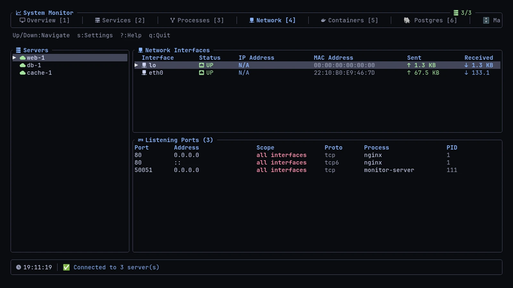

System and memory pressure
CPU, memory, swap and disks, plus kernel pressure stalls (PSI): the slowdown before memory runs out.
Server monitoring · Open source
A small Rust agent on each server, one terminal dashboard for all of them, and checks that name the problem: an exposed database, a certificate about to expire, a unit that keeps failing.
Linux, macOS and Windows · v0.2.0 · AGPL-3.0

The real dashboard, connected to three demo servers. Ports listening on every interface show in red.
What it watches
The agent collects on the server; the dashboard on your machine shows the whole fleet in nine tabs.
CPU, memory, swap and disks, plus kernel pressure stalls (PSI): the slowdown before memory runs out.
Docker health, restart loops, missing memory limits, and images that changed under the same tag.
Sizes, connections, idle sessions, and settings overridden with ALTER SYSTEM.
Warning 21 days before expiry, critical at 7, and a check that renewal is actually set up.
Every listening port with its process, and databases reachable from outside the server flagged as critical.
/metrics in Prometheus format, /health and /ready. Keep your history where you already keep it.
Findings
Every check run produces findings with a severity and a stable target. The alert names the culprit.
datastore_exposed a database port accepts outside connectionstls_certificate_expiring a certificate expires in 7 days or lessmemory_stalled processes waiting on memorycontainer_unhealthy a container keeps failing its health checksystemd_unit_failed a unit failedimage_drift the image behind a tag changed after the container started

Install
The installer downloads the latest release for your platform from GitHub.
$ curl -sSL https://github.com/codigocentral/code-monitor/releases/latest/download/install.sh | sudo bash $ sudo monitor-server show-token # token for the dashboard
$ curl -sSL https://github.com/codigocentral/code-monitor/releases/latest/download/install.sh \ | sudo bash -s -- --component client $ monitor-client add --name web-1 --address 203.0.113.10 --token <token> $ monitor-client
Windows, in PowerShell as Administrator: iwr https://github.com/codigocentral/code-monitor/releases/latest/download/install.ps1 -UseB | iex. The agent listens on port 50051; enable TLS in its configuration and keep it on a private network or VPN. Binaries for every platform are on the releases page.
Plans
/metricsJoin the waiting list: contato@codigocentral.com.br
Join the waiting list: contato@codigocentral.com.br